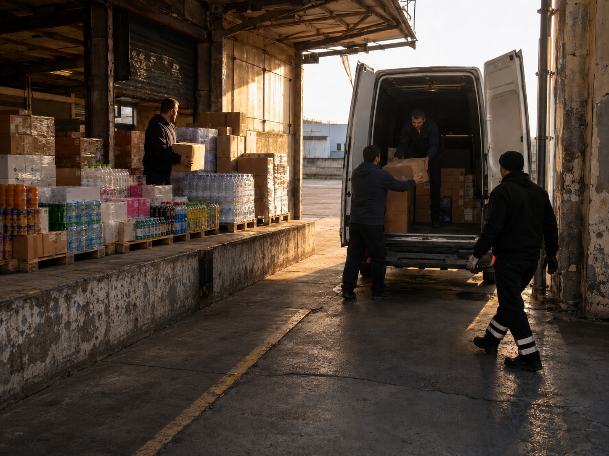

Ředitel zavolal. Nezajela byste se podívat na pobočku? Žádné zadání. Jen "máme tam trochu nepořádek." Dorazila jsem ráno. Odjela v noci. Jeden den.
Zpět na blog
Za ten jeden den jsem našla věci, co tam jedou setrvačností pravděpodobně roky. Drobnosti, co vyřešíte za odpoledne. A pak věci větší, kde nestačí říct "tak to změňte." Kde se musí přenastavit postupy, vysvětlit proč, a pak hlídat a vydržet.
Jeden proces mě ale dostal nejvíc.
Chlapi ručně nakládali dodávky z palet. Jeden po druhém. Balíček po balíčku.
"Proč to nenakládáte ještěrkou?" ptám se.
"Nemáme venkovní ještěrku."
"Vždyť máte vzadu sjezd ze skladu?"
Ticho.
5 dodávek na pobočce. Každá dělá i 3 točky za směnu.
Spočítejte si to sami.
Nikdo to nevidí. Nikdo se neptá proč. Ředitel věří, že to vedoucí řeší. Vedoucí věří, že to tak prostě chodí. A chlapi nakládají dál ručně.
Žádný problém s lidmi. Žádný problém se strojem. Jen nikdo nepočítal.
Není to lenost. Není to špatná vůle. Je to setrvačnost. Věci se dělají určitým způsobem, protože se tak vždy dělaly. A nikdo zvenku se nezeptal proč.
Změna navíc není jednoduchá. Lidi nesouhlasí, vymyslí sto důvodů proč to nejde, musí změnit věci na které jsou zvyklí. Když nikdo neměří a nikdo netlačí, tiše se to vrátí do starého.
Přitom 1 člověk, 20 minut zbytečností denně. To je přes 35 000 Kč ročně. A to je střízlivý odhad.
Zadejte svá čísla a uvidíte kolik vás zbytečné ztráty reálně stojí. Kalkulačka zdarma, bez registrace.
Chci kalkulačku ztrát zdarma